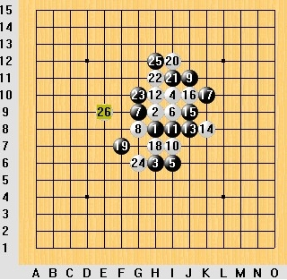
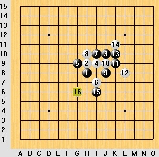
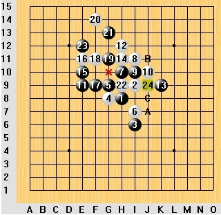
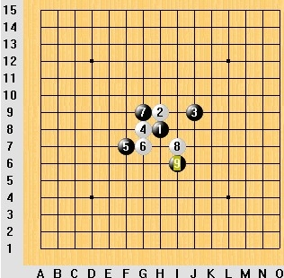
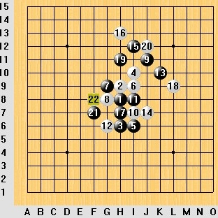

走别人的路，让别人无路可走
#1 走别人的路，让别人无路可走作者：厦门小天 发表时间：2010-10-30 13:16:35
这句话原本是我从别人的搞笑签名档看来的，事后一想觉得这话挺适合五子棋的。相信很多棋手都有类似的体验：中盘对手有某强个点难以破解时，若你能提前占领该点，对手可能就没辙了。
尽管这招并不总是灵验，但却是很多高高手“杀人越货”的必备武器。

全国赛时候我持黑对曹冬，25柔和，悄悄瞄着e9，若将来黑棋占了上下有棋。结果曹冬长考后先抢了，搞得我黑棋有点走投无路的感觉。

1年前跟大鱼下的一盘疏星，我黑棋本觉得控制下外围挺好的，左边下边都有东西，而且可以通过g6连起来。然后大鱼白棋直接把g6占了，把我恶心了一把。
不局限于实战，很多新研究都要用到这种思路。就我个人接触过的所有研究棋手包括我自己，都用过这样的思路。

比如以前岚月的一个难题，最早黑棋走B或C，白棋将来都会在A点搞出一堆乱七八糟的东西恶心黑棋。黑棋换了一堆走法都没法地毯白，最后黑棋火了，25直接把A点抢了，然后这个岚月分支也就彻底地毯了。

还有我初学时候接触的残月，当时3打这个分支黑棋主动八卦控制白棋，白棋极其难走。有人还拿这当黑棋控制白棋的经典例子，后来白棋怒了，8直接抢了i6,从此这个分支平衡。

最后说个比较近的例子，这个定式在几年前很流行。当时21,22如图那样交换的，之后黑棋有很多强大的进攻手段，但白棋始终有唯一防。大概2年前，不知谁率先打破常规，21抢占f8，然后黑就必胜了。（必胜谱应该是天羽最早做出来的，但貌似不是他最先走这个21）
不仅仅是实战和研究，几乎随便下盘棋都会用到类似的思路。相信非常多棋手都能意识到这点，体会或深或浅而已。
这里我还想提另一个五子棋的小技巧——排除对比。什么叫排除对比呢？比如某个局面你不知道该怎么走了，那你就随便蒙几个感觉比较好的点，然后把比较差的排除掉，排除不掉的对比看哪个更好些，对比不出就瞎蒙吧。这挺像考试的选择题，不会就蒙呗，五子棋蒙不到100分蒙个60分也不难。记得我初学五子棋的时候不少文章跟老师都有介绍这种办法，反正也不是新鲜的东西了。
前文提到的技巧，与排除对比 技巧类似，都历史悠久，都很常用但又说不清道理，都很难与“正统”思路“统一”起来但却实用，大多人都有类似体验并自觉不自觉的运用。所以，当我们学习老师们各种分析局面思路技巧的时候，也不要无视它们吧!
［此帖子已被 有志青年 在 2010-10-30 13:21:22 编辑过］
［ 岳麓小棋后 于 2010-10-30 18:09:25 时花20金币送鲜花一朵］
［ 维尔斯特拉斯 于 2010-10-30 18:14:04 时花20金币送鲜花一朵］
［ 被感动的人 于 2010-10-30 20:01:54 时花20金币送鲜花一朵］
［ 掌棋宣传员 于 2010-10-30 20:27:02 时花20金币送鲜花一朵］
［ 掌棋宣传员 于 2010-10-30 20:27:04 时花20金币送鲜花一朵］
［ 掌棋宣传员 于 2010-10-30 20:27:08 时花20金币送鲜花一朵］
［ 掌棋宣传员 于 2010-10-30 20:27:10 时花20金币送鲜花一朵］
［ 掌棋宣传员 于 2010-10-30 20:27:11 时花20金币送鲜花一朵］
［ 掌棋宣传员 于 2010-10-30 20:27:12 时花20金币送鲜花一朵］
［ 掌棋宣传员 于 2010-10-30 20:27:13 时花20金币送鲜花一朵］
［ 掌棋宣传员 于 2010-10-30 20:27:15 时花20金币送鲜花一朵］
#2 Re:走别人的路，让别人无路可走作者：怪 发表时间：2010-10-30 14:34:07
看到标题还以为有大新闻来着。。。#3 Re:走别人的路，让别人无路可走作者：岳麓小棋后 发表时间：2010-10-30 17:40:15
手筋的味道
兵法云：凭高视下，势如劈竹。说的就是手筋吧！但也有例外哦，还记得马谡失街亭吗？呵呵……
［此帖子已被 岳麓小棋后 在 2010-10-30 17:47:19 编辑过］
［ 冷酒一杯 于 2010-10-30 20:40:53 时花20金币送鲜花一朵］
#4 Re:走别人的路，让别人无路可走作者：维尔斯特拉斯 发表时间：2010-10-30 18:14:36
有意思、、#5 Re:走别人的路，让别人无路可走作者：秋叶散人 发表时间：2010-11-1 22:51:59
——敌之要点，我之要点！小天大师的文章每次都是图文并茂，令人茅塞顿开，受益匪浅啊！
——其实每个局面都有一个价值最大的点，下棋的最高境界就是每一步都能占据这个“价值最大点”。当然实际上这很难做到，尤其是“每一步”，除非是棋圣！
打个不太恰当的比方吧，下五子棋就好比是比赛拿苹果：说一筐苹果有225个，你和对手一人一个轮流拿苹果，谁的苹果总重量比另一个人多出5斤，谁就是获胜者，到最后两人苹果重量之差也没达到5斤就算和局打平。比赛一开始可热闹了：
“咦，这个苹果大，我拿先！”
“靠，那个苹果ZTM的大，我刚才怎么就没看到呢？”
“什么东东哦？还有塑料苹果啊！还先拿一方不小心拿到塑料苹果就算输啊？这这这。。。”——什么眼神儿嘛！ 呵呵。。。
［此帖子已被 秋叶散人 在 2010-11-1 22:53:26 编辑过］
［此帖子已被 秋叶散人 在 2010-11-1 22:54:26 编辑过］
［ 掌棋宣传员 于 2010-11-2 23:05:45 时花20金币送鲜花一朵］
［ 掌棋宣传员 于 2010-11-2 23:05:46 时花20金币送鲜花一朵］
［ 掌棋宣传员 于 2010-11-2 23:05:47 时花20金币送鲜花一朵］
［ 掌棋宣传员 于 2010-11-2 23:05:48 时花20金币送鲜花一朵］
［ 掌棋宣传员 于 2010-11-2 23:05:48 时花20金币送鲜花一朵］
［ 掌棋宣传员 于 2010-11-2 23:05:49 时花20金币送鲜花一朵］
［ 掌棋宣传员 于 2010-11-2 23:05:49 时花20金币送鲜花一朵］
［ 掌棋宣传员 于 2010-11-2 23:05:50 时花20金币送鲜花一朵］
#6 Re:Re:走别人的路，让别人无路可走作者：日出333 发表时间：2010-11-2 18:23:06
引用：
原文由 秋叶散人 发表于 2010-11-1 22:51:59 :——敌之要点，我之要点！小天大师的文章每次都是图文并茂，令人茅塞顿开，受益匪浅啊！
——其实每个局面都有一个价值最大的点，下棋的最高境界就是每一步都能占据这个“价值最大点”。当然实际上这很难做到，尤其是“每一步”，除非是棋圣！
打个不太恰当的比方吧，下五子棋就好比是比赛拿苹果：说一筐苹果有225个，你和对手一人一个轮流拿苹果，谁的苹果总重量比另一个人多出5斤，谁就是获胜者，到最后两人苹果重量之差也没达到5斤就算和局打平。比赛一开始可热闹了：
“咦，这个苹果大，我拿先！”
“靠，那个苹果ZTM的大，我刚才怎么就没看到呢？”
“什么东东哦？还有塑料苹果啊！还先拿一方不小心拿到塑料苹果就算输啊？这这这。。。”——什么眼神儿嘛！ 呵呵。。。
［此帖子已被 秋叶散人 在 2010-11-1 22:53:26 编辑过］
［此帖子已被 秋叶散人 在 2010-11-1 22:54:26 编辑过］
后面这个比喻很搞笑哈。。
其实盘面上还有很多点是只对一方有利的，
下棋的顺序是：先占双方都有利的点，然后再占对自己特有利的点，最后才选那些利于敌方的点（这时就相当于无奈防守了）。
#7 Re:走别人的路，让别人无路可走作者：屏蔽 发表时间：2010-11-2 22:16:51
quote:先占双方都有利的点，然后再占对自己特有利的点，最后才选那些利于敌方的点 另一个思路是：让对方占对对方没有益处的点。#8 Re:走别人的路，让别人无路可走作者：与郎共五 发表时间：2010-11-3 11:05:22
前提：自家的道路尚在建设。#9 Re:走别人的路，让别人无路可走作者：小帮帮 发表时间：2010-11-14 17:19:31
最后一个图的局面，已经必胜了？#10 Re:走别人的路，让别人无路可走作者：快乐天羽 发表时间：2011-1-12 14:00:36
最后说个比较近的例子，这个定式在几年前很流行。当时21,22如图那样交换的，之后黑棋有很多强大的进攻手段，但白棋始终有唯一防。大概2年前，不知谁率先打破常规，21抢占f8，然后黑就必胜了。（必胜谱应该是天羽最早做出来的，但貌似不是他最先走这个21）
今天才看到这个文章，这个21很早就有，老的棋谱里有这个21变化。但属于无人关注的点。确定必胜，是我在一次和小曼PK，我走了这个21后，竟然发现他无防，怎么防，我都有很强的进攻。最后我确定这个点可以必胜，然后小曼帮我一起拆出来地毯。
［此帖子已被 快乐天羽 在 2011-1-12 14:05:49 编辑过］
#11 Re:走别人的路，让别人无路可走作者：自来水 发表时间：2011-1-14 20:48:45
感觉实际情况还是比案例复杂，不能盲目套用。筋和形都是相对而言的，有时候可能需要利用棋形整体地，多线路牵制对方，未必是用单一的子力占据敌方要点（个人感觉这样的防守在局部依然属于消极死守的类型）。#12 Re:Re:走别人的路，让别人无路可走作者：岑小鱼 发表时间：2011-1-15 20:58:00
引用：
原文由 快乐天羽 发表于 2011-1-12 14:00:36 :最后说个比较近的例子，这个定式在几年前很流行。当时21,22如图那样交换的，之后黑棋有很多强大的进攻手段，但白棋始终有唯一防。大概2年前，不知谁率先打破常规，21抢占f8，然后黑就必胜了。（必胜谱应该是天羽最早做出来的，但貌似不是他最先走这个21）
今天才看到这个文章，这个21很早就有，老的棋谱里有这个21变化。但属于无人关注的点。确定必胜，是我在一次和小曼PK，我走了这个21后，竟然发现他无防，怎么防，我都有很强的进攻。最后我确定这个点可以必胜，然后小曼帮我一起拆出来地毯。
［此帖子已被 快乐天羽 在 2011-1-12 14:05:49 编辑过］
03年左右我多数选择F8这个点 最先的灵感来源于email里面的棋谱（我猜是里面的谱）
准确点来说是当时Renlib自带的谱有这个点的一些变化
#13 Re:走别人的路，让别人无路可走作者：岑小鱼 发表时间：2011-1-15 20:59:33
补充一点 以前我没找出很强的后续手段 现在也不会其必胜之法 虽然有些谱但还没时间学